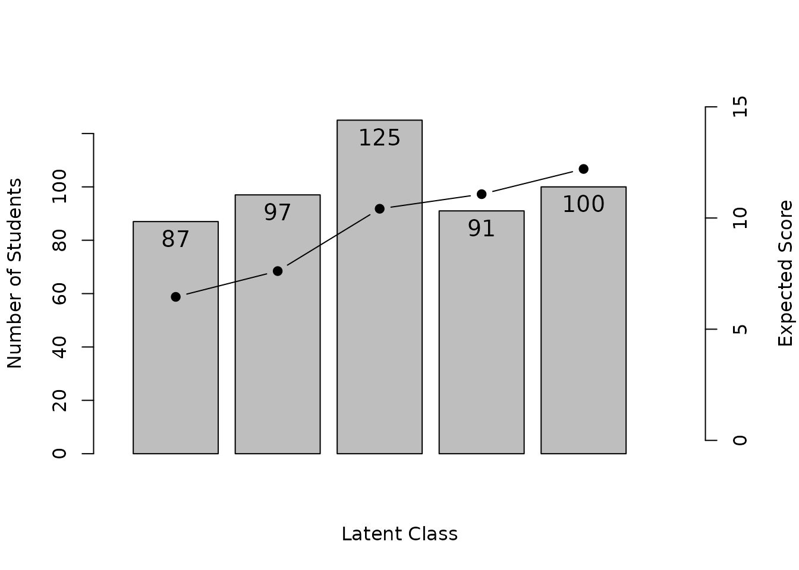
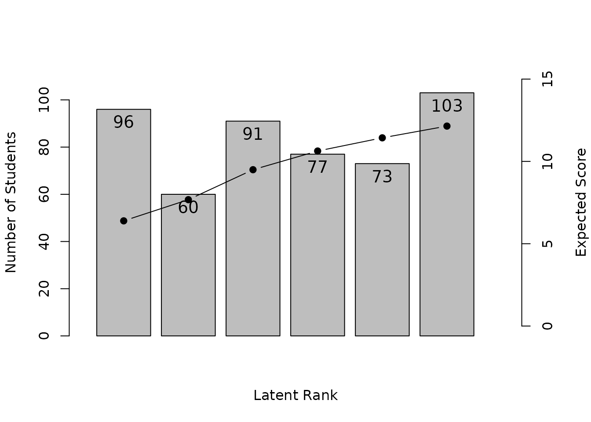
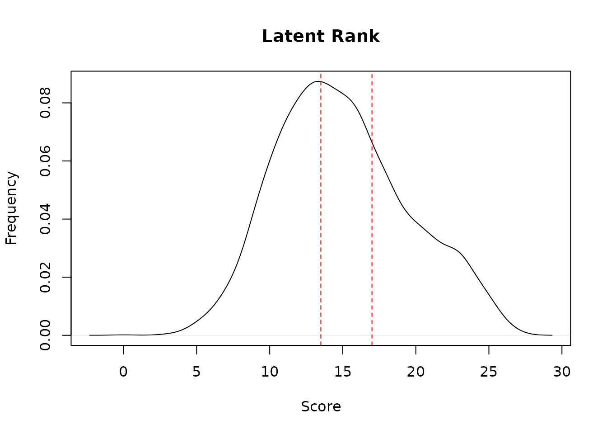

Latent Class Analysis (LCA)
LCA classifies examinees into unordered latent classes. Specify the dataset and the number of classes.
LCA(J15S500, ncls = 5)
#>
#> Item Reference Profile
#> IRP1 IRP2 IRP3 IRP4 IRP5
#> Item01 0.5185 0.6996 0.76358 0.856 0.860
#> Item02 0.5529 0.6276 0.81161 0.888 0.855
#> Item03 0.7959 0.3205 0.93735 0.706 0.849
#> Item04 0.5069 0.5814 0.86940 0.873 1.000
#> Item05 0.6154 0.7523 0.94673 0.789 0.886
#> Item06 0.6840 0.7501 0.94822 1.000 0.907
#> Item07 0.4832 0.4395 0.83377 0.874 0.900
#> Item08 0.3767 0.3982 0.62563 0.912 0.590
#> Item09 0.3107 0.3980 0.26616 0.165 0.673
#> Item10 0.5290 0.5341 0.76134 0.677 0.781
#> Item11 0.1007 0.0497 0.00132 0.621 0.623
#> Item12 0.0355 0.1673 0.15911 0.296 0.673
#> Item13 0.2048 0.5490 0.89445 0.672 0.784
#> Item14 0.3508 0.7384 0.77159 0.904 1.000
#> Item15 0.3883 0.6077 0.82517 0.838 0.823
#>
#> Test Profile
#> Class 1 Class 2 Class 3 Class 4 Class 5
#> Test Reference Profile 6.453 7.613 10.415 11.072 12.205
#> Latent Class Ditribution 87.000 97.000 125.000 91.000 100.000
#> Class Membership Distribution 90.372 97.105 105.238 102.800 104.484
#>
#> Item Fit Indices
#> model_log_like bench_log_like null_log_like model_Chi_sq null_Chi_sq
#> Item01 -264.179 -240.190 -283.343 47.978 86.307
#> Item02 -256.363 -235.436 -278.949 41.853 87.025
#> Item03 -237.888 -260.906 -293.598 -46.037 65.383
#> Item04 -208.536 -192.072 -265.962 32.928 147.780
#> Item05 -226.447 -206.537 -247.403 39.819 81.732
#> Item06 -164.762 -153.940 -198.817 21.644 89.755
#> Item07 -249.377 -228.379 -298.345 41.997 139.933
#> Item08 -295.967 -293.225 -338.789 5.483 91.127
#> Item09 -294.250 -300.492 -327.842 -12.484 54.700
#> Item10 -306.985 -288.198 -319.850 37.574 63.303
#> Item11 -187.202 -224.085 -299.265 -73.767 150.360
#> Item12 -232.307 -214.797 -293.598 35.020 157.603
#> Item13 -267.647 -262.031 -328.396 11.232 132.730
#> Item14 -203.468 -204.953 -273.212 -2.969 136.519
#> Item15 -268.616 -254.764 -302.847 27.705 96.166
#> model_df null_df NFI RFI IFI TLI CFI RMSEA AIC CAIC
#> Item01 9 13 0.444 0.197 0.496 0.232 0.468 0.093 29.978 -16.954
#> Item02 9 13 0.519 0.305 0.579 0.359 0.556 0.086 23.853 -23.079
#> Item03 9 13 1.000 1.000 1.000 1.000 1.000 0.000 -64.037 -110.969
#> Item04 9 13 0.777 0.678 0.828 0.744 0.822 0.073 14.928 -32.004
#> Item05 9 13 0.513 0.296 0.576 0.352 0.552 0.083 21.819 -25.112
#> Item06 9 13 0.759 0.652 0.843 0.762 0.835 0.053 3.644 -43.287
#> Item07 9 13 0.700 0.566 0.748 0.625 0.740 0.086 23.997 -22.934
#> Item08 9 13 0.940 0.913 1.000 1.000 1.000 0.000 -12.517 -59.448
#> Item09 9 13 1.000 1.000 1.000 1.000 1.000 0.000 -30.484 -77.415
#> Item10 9 13 0.406 0.143 0.474 0.179 0.432 0.080 19.574 -27.357
#> Item11 9 13 1.000 1.000 1.000 1.000 1.000 0.000 -91.767 -138.698
#> Item12 9 13 0.778 0.679 0.825 0.740 0.820 0.076 17.020 -29.912
#> Item13 9 13 0.915 0.878 0.982 0.973 0.981 0.022 -6.768 -53.699
#> Item14 9 13 1.000 1.000 1.000 1.000 1.000 0.000 -20.969 -67.901
#> Item15 9 13 0.712 0.584 0.785 0.675 0.775 0.065 9.705 -37.226
#> BIC
#> Item01 -7.954
#> Item02 -14.079
#> Item03 -101.969
#> Item04 -23.004
#> Item05 -16.112
#> Item06 -34.287
#> Item07 -13.934
#> Item08 -50.448
#> Item09 -68.415
#> Item10 -18.357
#> Item11 -129.698
#> Item12 -20.912
#> Item13 -44.699
#> Item14 -58.901
#> Item15 -28.226
#>
#> Model Fit Indices
#> Number of Latent class: 5
#> Number of EM cycle: 73
#> value
#> model_log_like -3663.994
#> bench_log_like -3560.005
#> null_log_like -4350.217
#> model_Chi_sq 207.977
#> null_Chi_sq 1580.424
#> model_df 135.000
#> null_df 195.000
#> NFI 0.868
#> RFI 0.810
#> IFI 0.950
#> TLI 0.924
#> CFI 0.947
#> RMSEA 0.033
#> AIC -62.023
#> CAIC -765.995
#> BIC -630.995The Class Membership Matrix indicates which latent class each examinee belongs to:
result.LCA <- LCA(J15S500, ncls = 5)
head(result.LCA$Students)
#> Membership 1 Membership 2 Membership 3 Membership 4 Membership 5
#> Student001 0.7839477684 0.171152798 0.004141844 4.075759e-02 3.744590e-12
#> Student002 0.0347378747 0.051502214 0.836022799 7.773694e-02 1.698776e-07
#> Student003 0.0146307878 0.105488644 0.801853496 3.343026e-02 4.459682e-02
#> Student004 0.0017251650 0.023436459 0.329648386 3.656488e-01 2.795412e-01
#> Student005 0.2133830569 0.784162066 0.001484616 2.492073e-08 9.702355e-04
#> Student006 0.0003846482 0.001141448 0.001288901 8.733869e-01 1.237981e-01
#> Estimate
#> Student001 1
#> Student002 3
#> Student003 3
#> Student004 4
#> Student005 2
#> Student006 4LCA Plot Types
- IRP: Item Reference Profile
- CMP: Class Membership Profile
- TRP: Test Reference Profile
- LCD: Latent Class Distribution
plot(result.LCA, type = "IRP", items = 1:6, nc = 2, nr = 3)
plot(result.LCA, type = "CMP", students = 1:9, nc = 3, nr = 3)
plot(result.LCA, type = "TRP")
plot(result.LCA, type = "LCD")Latent Rank Analysis (LRA)
LRA is similar to LCA but assumes an ordering among the latent classes (ranks). Specify the dataset and the number of ranks.
LRA(J15S500, nrank = 6)
#> estimating method is GTM
#> Item Reference Profile
#> IRP1 IRP2 IRP3 IRP4 IRP5 IRP6
#> Item01 0.5851 0.6319 0.708 0.787 0.853 0.898
#> Item02 0.5247 0.6290 0.755 0.845 0.883 0.875
#> Item03 0.6134 0.6095 0.708 0.773 0.801 0.839
#> Item04 0.4406 0.6073 0.794 0.882 0.939 0.976
#> Item05 0.6465 0.7452 0.821 0.837 0.862 0.905
#> Item06 0.6471 0.7748 0.911 0.967 0.963 0.915
#> Item07 0.4090 0.5177 0.720 0.840 0.890 0.900
#> Item08 0.3375 0.4292 0.602 0.713 0.735 0.698
#> Item09 0.3523 0.3199 0.298 0.282 0.377 0.542
#> Item10 0.4996 0.5793 0.686 0.729 0.717 0.753
#> Item11 0.0958 0.0793 0.136 0.286 0.472 0.617
#> Item12 0.0648 0.0982 0.156 0.239 0.421 0.636
#> Item13 0.2908 0.4842 0.715 0.773 0.750 0.778
#> Item14 0.4835 0.5949 0.729 0.849 0.933 0.977
#> Item15 0.3981 0.5745 0.756 0.827 0.835 0.834
#>
#> Item Reference Profile Indices
#> Alpha A Beta B Gamma C
#> Item01 3 0.0786 1 0.585 0.0 0.00000
#> Item02 2 0.1264 1 0.525 0.2 -0.00787
#> Item03 2 0.0987 2 0.610 0.2 -0.00391
#> Item04 2 0.1864 1 0.441 0.0 0.00000
#> Item05 1 0.0987 1 0.647 0.0 0.00000
#> Item06 2 0.1362 1 0.647 0.4 -0.05198
#> Item07 2 0.2028 2 0.518 0.0 0.00000
#> Item08 2 0.1731 2 0.429 0.2 -0.03676
#> Item09 5 0.1646 6 0.542 0.6 -0.07002
#> Item10 2 0.1069 1 0.500 0.2 -0.01244
#> Item11 4 0.1867 5 0.472 0.2 -0.01650
#> Item12 5 0.2146 5 0.421 0.0 0.00000
#> Item13 2 0.2310 2 0.484 0.2 -0.02341
#> Item14 2 0.1336 1 0.484 0.0 0.00000
#> Item15 2 0.1817 2 0.574 0.2 -0.00123
#>
#> Test Profile
#> Rank 1 Rank 2 Rank 3 Rank 4 Rank 5 Rank 6
#> Test Reference Profile 6.389 7.675 9.496 10.631 11.432 12.144
#> Latent Rank Ditribution 96.000 60.000 91.000 77.000 73.000 103.000
#> Rank Membership Distribution 83.755 78.691 81.853 84.918 84.238 86.545
#>
#> Item Fit Indices
#> model_log_like bench_log_like null_log_like model_Chi_sq null_Chi_sq
#> Item01 -264.495 -240.190 -283.343 48.611 86.307
#> Item02 -253.141 -235.436 -278.949 35.409 87.025
#> Item03 -282.785 -260.906 -293.598 43.758 65.383
#> Item04 -207.082 -192.072 -265.962 30.021 147.780
#> Item05 -234.902 -206.537 -247.403 56.730 81.732
#> Item06 -168.218 -153.940 -198.817 28.556 89.755
#> Item07 -250.864 -228.379 -298.345 44.970 139.933
#> Item08 -312.621 -293.225 -338.789 38.791 91.127
#> Item09 -317.600 -300.492 -327.842 34.216 54.700
#> Item10 -309.654 -288.198 -319.850 42.910 63.303
#> Item11 -242.821 -224.085 -299.265 37.472 150.360
#> Item12 -236.522 -214.797 -293.598 43.451 157.603
#> Item13 -287.782 -262.031 -328.396 51.502 132.730
#> Item14 -221.702 -204.953 -273.212 33.499 136.519
#> Item15 -267.793 -254.764 -302.847 26.059 96.166
#> model_df null_df NFI RFI IFI TLI CFI RMSEA AIC CAIC
#> Item01 9.233 13 0.437 0.207 0.489 0.244 0.463 0.092 30.146 -17.999
#> Item02 9.233 13 0.593 0.427 0.664 0.502 0.646 0.075 16.944 -31.201
#> Item03 9.233 13 0.331 0.058 0.385 0.072 0.341 0.087 25.293 -22.852
#> Item04 9.233 13 0.797 0.714 0.850 0.783 0.846 0.067 11.555 -36.590
#> Item05 9.233 13 0.306 0.023 0.345 0.027 0.309 0.102 38.264 -9.881
#> Item06 9.233 13 0.682 0.552 0.760 0.646 0.748 0.065 10.091 -38.054
#> Item07 9.233 13 0.679 0.548 0.727 0.604 0.718 0.088 26.504 -21.641
#> Item08 9.233 13 0.574 0.401 0.639 0.467 0.622 0.080 20.326 -27.820
#> Item09 9.233 13 0.374 0.119 0.451 0.156 0.401 0.074 15.751 -32.394
#> Item10 9.233 13 0.322 0.046 0.377 0.057 0.330 0.085 24.445 -23.700
#> Item11 9.233 13 0.751 0.649 0.800 0.711 0.794 0.078 19.006 -29.139
#> Item12 9.233 13 0.724 0.612 0.769 0.667 0.763 0.086 24.985 -23.160
#> Item13 9.233 13 0.612 0.454 0.658 0.503 0.647 0.096 33.037 -15.108
#> Item14 9.233 13 0.755 0.654 0.809 0.723 0.804 0.073 15.034 -33.111
#> Item15 9.233 13 0.729 0.618 0.806 0.715 0.798 0.060 7.593 -40.552
#> BIC
#> Item01 -8.767
#> Item02 -21.969
#> Item03 -13.620
#> Item04 -27.357
#> Item05 -0.648
#> Item06 -28.822
#> Item07 -12.408
#> Item08 -18.587
#> Item09 -23.162
#> Item10 -14.467
#> Item11 -19.906
#> Item12 -13.927
#> Item13 -5.875
#> Item14 -23.879
#> Item15 -31.319
#>
#> Model Fit Indices
#> Number of Latent rank: 6
#> Number of EM cycle: 17
#> value
#> model_log_like -3857.982
#> bench_log_like -3560.005
#> null_log_like -4350.217
#> model_Chi_sq 595.954
#> null_Chi_sq 1580.424
#> model_df 138.491
#> null_df 195.000
#> NFI 0.623
#> RFI 0.469
#> IFI 0.683
#> TLI 0.535
#> CFI 0.670
#> RMSEA 0.081
#> AIC 318.973
#> CAIC -403.203
#> BIC -264.712Rank membership probabilities and rank-up/rank-down odds are calculated:
result.LRA <- LRA(J15S500, nrank = 6)
head(result.LRA$Students)
#> Membership 1 Membership 2 Membership 3 Membership 4 Membership 5
#> Student001 0.2704649921 0.357479353 0.27632327 0.084988078 0.010069050
#> Student002 0.0276546965 0.157616072 0.47438958 0.279914853 0.053715813
#> Student003 0.0228189795 0.138860955 0.37884545 0.284817610 0.120794858
#> Student004 0.0020140858 0.015608542 0.09629429 0.216973334 0.362406292
#> Student005 0.5582996437 0.397431414 0.03841668 0.003365601 0.001443909
#> Student006 0.0003866603 0.003168853 0.04801344 0.248329964 0.428747502
#> Membership 6 Estimate Rank-Up Odds Rank-Down Odds
#> Student001 0.0006752546 2 0.7729769 0.7565891
#> Student002 0.0067089816 3 0.5900527 0.3322503
#> Student003 0.0538621490 3 0.7518042 0.3665372
#> Student004 0.3067034562 5 0.8462973 0.5987019
#> Student005 0.0010427491 1 0.7118604 NA
#> Student006 0.2713535842 5 0.6328983 0.5791986
plot(result.LRA, type = "IRP", items = 1:6, nc = 2, nr = 3)
plot(result.LRA, type = "RMP", students = 1:9, nc = 3, nr = 3)
plot(result.LRA, type = "TRP")
plot(result.LRA, type = "LRD")LRA for Ordinal Data
LRA can also handle ordinal scale data. The mic option
enforces monotonic increasing constraints.
result.LRAord <- LRA(J15S3810, nrank = 3, mic = TRUE)Score-rank relationship visualizations:
plot(result.LRAord, type = "ScoreFreq")
plot(result.LRAord, type = "ScoreRank")
Item-rank relationship plots:
- ICBR: Item Category Boundary Reference – cumulative probability curves for each category threshold
- ICRP: Item Category Response Profile – probability of each response category across ranks
plot(result.LRAord, type = "ICBR", items = 1:4, nc = 2, nr = 2)
plot(result.LRAord, type = "ICRP", items = 1:4, nc = 2, nr = 2)Rank membership profiles for individual examinees:
plot(result.LRAord, type = "RMP", students = 1:9, nc = 3, nr = 3)
LRA for Rated/Nominal Data
For multiple-choice tests (nominal scale), LRA can analyze response patterns including distractor choices.
result.LRArated <- LRA(J35S5000, nrank = 10, mic = TRUE)
plot(result.LRArated, type = "ScoreFreq")
plot(result.LRArated, type = "ScoreRank")
plot(result.LRArated, type = "ICRP", items = 1:4, nc = 2, nr = 2)